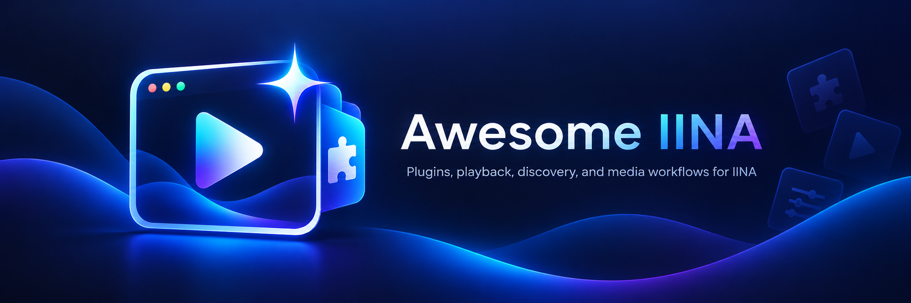
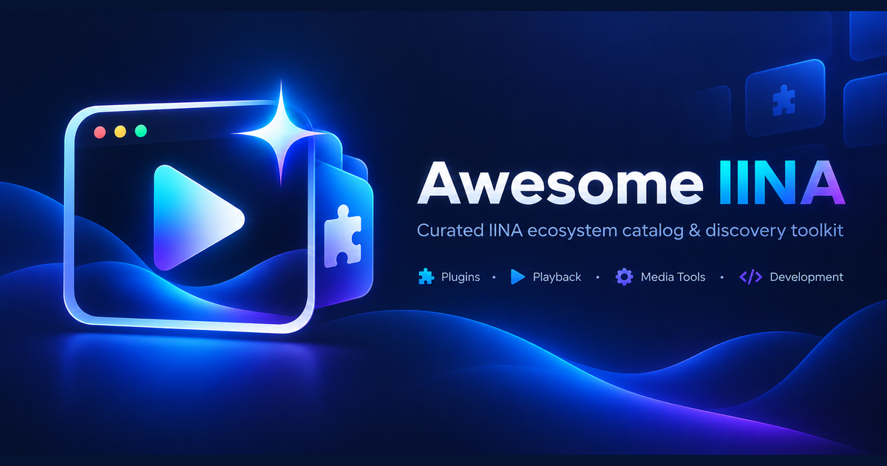

Awesome IINA
Four original raster artworks, preserved. The files below are views or explicitly documented derivatives—not a new vector identity or optically redesigned favicon.
Open the audit prompt · Asset manifest · Kit instructions
Original icon artwork
Master icon
1254×1254 original · opaque RGB · no vector source
Simplified icon
1254×1254 original · source for favicon exports
Favicon size checks
Each group preserves the exact labelled CSS width and height. Tiny versions are direct resizes, not pixel-hinted or independently simplified artwork.
 64 px64 px
64 px64 pxGitHub social preview

1280×640 PNG · 794,030 bytes · whole source preserved
Reduced preview: 640×320 CSS pixels
Reduced preview: 320×160 CSS pixels
README hero

1800×600 export · original is 2172×724 · all lettering remains rasterized
Narrow viewport candidate: 360×120 CSS pixels
Optional padded website card

1200×630 canvas; 1200×600 image plus 15-pixel padding above and below. Not a universal platform requirement.
Missing by design: editable vectors, transparent knockout, monochrome master, editable typography and true optical-size favicon variants. The audit prompt asks whether these should be made; this kit does not pretend they exist.